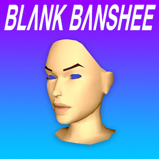

Devon Henryx
Devon Hendryx es el proyecto musical menos conocido de JPEGMAFIA, que se inspira en las escenas del cloud rap y vaporwave. A lo largo de los años, Devon ha lanzado proyectos en su página Bandcamp como THE GHOST~POP TAPE y DREAMCAST SUMMER SONGS. Después de THE GHOST~POP TAPE, Devon amenazó con suicidarse y salió del radar de su pequeña base de fans. 2 años después, comenzó de nuevo como JPEGMAFIA, con el mixtape "Communist Slow Jams".
En 2022, un usuario anónimo creó una página de archivo con las canciones de Devon Hendryx, que no estaban en los servicios de transmisión en ese momento. El propio Devon mencionó en Twitter que planea remasterizar sus álbumes bajo este alias y lanzarlos oficialmente en servicios de streaming. La música de Devon Hendryx está disponible oficialmente en Bandcamp.

Death´s Dynamic Shroud
Death's Dynamic Shroud (estilizado en todas las minúsculas ; también conocido como el shroud.wmv dinámico de la muerte bajo lanzamientos específicos) es un trío estadounidense de ondas electrónicas y de vapor que consiste en James Webster, Tech Honors y Keith Rankin.[1] La banda lanza una gran cantidad de música regularmente como mixtapes impulsados por muestras bajo el apodo .wmv, además de lanzar álbumes principales más estándar.

Black Banshee
Patrick Driscoll (nacido el 28 de junio de 1987) es Blank Bansheeun artista, músico y productor canadiense de Saint John, New Brunswick. Llegó a popularidad en 2012 con su álbum Blank Banshee, que combinó elementos tradicionales de onda de vapor con música trap, un estilo ahora conocido como vaportrap. La música de Blank Banshee ha sido descrita como un "equilibrio de ambiente abstracto y trampa para bailar"

マクロスMACROSS 82-99
Su música combina elementos de plunderphonics, disco, fusión de jazz, house, hip hop y pop de la ciudad, y comúnmente hace uso de videojuegos, cultura pop japonesa, así como anime de los 80 y 90, sobre todo Sailor Moon, como tropos estéticos. Los álbumes de Macross 82-99 de 2013 ネオ東京(Englishinglés: Neo Tokio) y SAILORWAVE, junto con la cohorte musical Saint Pepsi's Hit Vibes, se citan comúnmente como el punto de origen del "fu funk" subgénero de la onda de vapor, que combina el enfoque de producción basado en muestras y el lenguaje visual de la onda de vapor con influencias de la música de baile en casa francesa y la música dance.
El "82-99" en el nombre artístico del artista se refiere a la Fortalra de Super Dimensión Macross. El anime, que inspiró el proyecto sonora y visualmente, fue transmitido en 1982 mientras que la historia del programa se lleva a cabo en el año 1999.

ESPRIT 空想
George Clanton nació en Ridgeway, Virginia. Creció yendo a espectáculos de punk rock. Su carrera comenzó cuando accidentalmente descargó una canción de la Masacre de Brian Jonestown, que lo llevó por un agujero de conejo de Internet donde descubrió "un nuevo mundo de música" que lo inspiró a escribir y lanzar su propio bajo el seudónimo de los Espectros, y más tarde ESPRIT . Decidió empezar a usar su nombre real antes de lanzar su álbum 100% Electronica, porque "no quería lanzar un álbum más como Mirror Kisses", y "odió decir 'Mirror Kisses' cada vez que alguien le preguntó su nombre de banda". Intió hacer una secuela al 100% Electronica durante tres años, pero sintió que falló, porque no fue capaz de encontrar el sonido que quería para ello. Después de darse por vencido, comenzó a experimentar y escribir cosas para divertirse y sintió que las "canciones [estaban escribiendo] ellos mismos". Eventualmente, este material se transformó en su próximo álbum, Slide, donde también incorporó guitarra eléctrica y baterías acústicas.
En 2015 estableció su sello discográfico 100% Electronica junto a su entonces novia, ahora esposa, compañera de artista musical Neggy Gemmy. Tanto él como Neggy Gemmy provienen de Virginia y jugaron su primer concierto juntos en 2011 junto con otros artistas como Skylar Spence. En 2019 lanzaron 100% Electronicon, el primer festival de música de vapor onda.
Clanton transmite regularmente sus actuaciones en vivo en Twitch y YouTube. Describió a la ciudad de Nueva York como su ciudad favorita en el mundo para actuar.
Clanton tiene un título en antropología y se enseñó programación informática con el fin de crear experiencias interactivas virtuales para su sello discográfico.